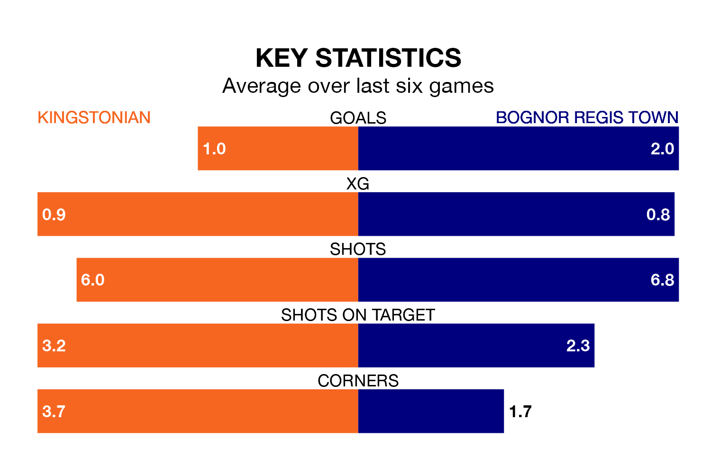

Bognor Regis Town are strong favourites to take all three points despite Kingstonian's home advantage in Saturday's match.
*Betting Company* are offering odds of 1.75 on Bognor Regis sealing the win, with the visitors sitting seventh in the Isthmian Premier Division table.
Kingstonian, who are 22nd in the league and 33 points behind Bognor Regis, are priced at 3.6 to win. A draw is set at 3.75.
Kingstonian are in terrible form in the Isthmian Premier Division, with no wins and a draw from their last six games.
With five wins and a draw over that period, Bognor Regis's form is much better – they have taken 16 points from 18, compared to the home side's one.
In the last 10 years, Kingstonian and Bognor Regis have played each other on 16 occasions. Kingstonian won four of them, Bognor Regis six, and they drew six times.
On average, Kingstonian scored 1.2 goals and Bognor Regis 1.3 in those matches.
Their last meeting was on September 23, when Bognor Regis won 2-0 at home.
With 37 goals in 26 games so far this season, Kingstonian are scoring at below the league average rate with 1.4 goals per game. And they are conceding more than average, letting in 59 goals at a rate of 2.3 per game.
Town, meanwhile, are average scorers, with 1.6 goals per game. They have conceded 1.3 goals per game.
Kingstonian's last match was on February 3, a 3-1 loss against Hastings United.
Bognor Regis drew 1-1 with Cheshunt last time out, on February 10.
Updated: 12:06 (UTC), 15/02/24